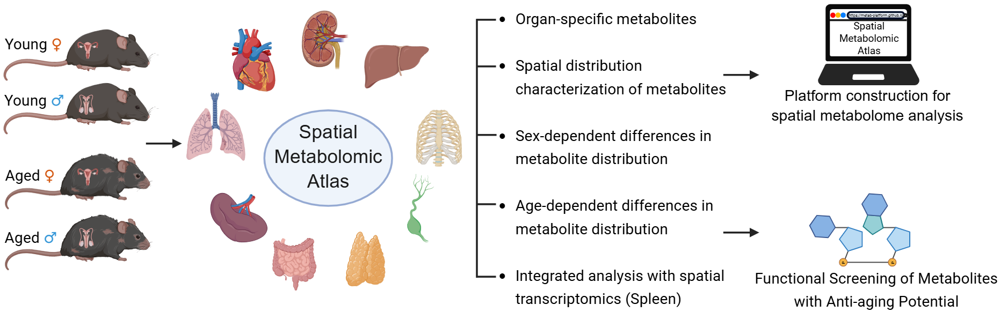
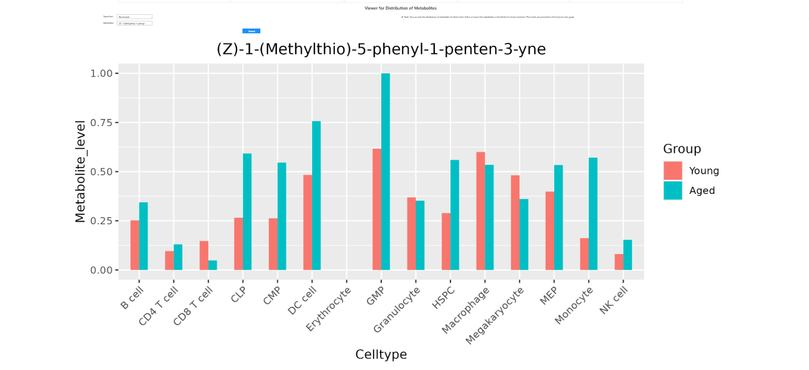
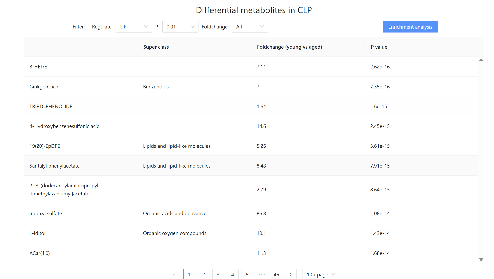

Cohort Design
Nine organs are profiled across young female, young male, aged female, and aged male groups.
Spatial metabolomics resource
A cross-organ atlas for exploring metabolite distribution, spatial specificity, aging-associated remodeling, and sex-dependent metabolic differences across mouse tissues.

Functions
Citation placeholder: Spatial Metabolomic Atlas of the Mouse.
Method
This page will host the experimental workflow, mouse cohort design, sample preparation, instrument parameters, and computational analysis details.
Nine organs are profiled across young female, young male, aged female, and aged male groups.
Fresh frozen sections are prepared for matched H&E imaging and MALDI-MSI acquisition.
Ion images are collected with standardized instrument settings and quality-control checks.
Spatial clustering, metabolite annotation, differential testing, and pathway enrichment are integrated.
Browse
Select an organ to inspect its overview, then choose a cohort to browse three matched samples with H&E images, spatial metabolomic clusters, and metabolite class summaries.
| Heart | ||||
|---|---|---|---|---|
| Group | Samples | Spots | Ions | Metabolites |
Search a metabolite or m/z feature and compare its spatial abundance pattern across organs, cohorts, and samples.
Open moduleSelect an anatomical region to view region-enriched metabolites, word-cloud summaries, and pathway enrichment results.
Open moduleCompare young and aged cohorts within each organ and region to identify age-associated metabolic remodeling.
Open moduleExplore female-versus-male metabolic signatures and inspect cohort-specific volcano plots and biomarker tables.
Open moduleModule 1
Choose an organ and metabolite to preview spatial distribution patterns across the four cohorts.


Module 2
Select an organ and anatomical cluster to inspect the representative spatial map, cluster-specific metabolites, metabolite word cloud, pathway enrichment plot, and pathway enrichment ratio table.
| Metabolite | Super Class | log2FC | Adjusted P |
|---|
| Pathway | Enrichment Ratio |
|---|
Module 3
Filter by organ, sex, and cluster to compare young and aged groups and review ranked differential metabolites.
Module 4
Filter by organ, age group, and cluster to compare female and male cohorts within matching biological contexts.
Download
Download links are prepared for sample metadata, spatial annotations, differential metabolite tables, and pathway enrichment results.
Help
For questions about data submission, image replacement, analysis modules, or citation format, contact the SMA project team.